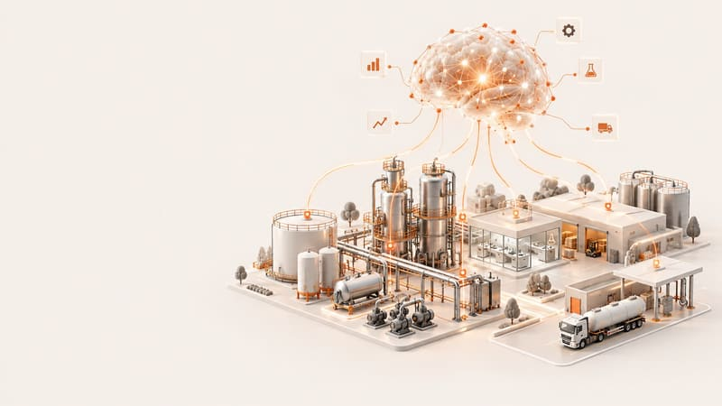

Carregando o portal…
Transformação Digital · Itatiba
O ponto de entrada da Transformação Digital de Itatiba. Uma central de inteligência que conecta roadmaps, capacitação e novidades — num só lugar.

Três destinos
Três frentes conectadas pela mesma central de inteligência.
Academia Digital
O que há de novo
Sua área, no mapa
Toda transformação começa com uma iniciativa. Registre a sua e conecte-a à central de inteligência da planta.
© 2026 Transformação Digital — Planta Itatiba. Portal interno.